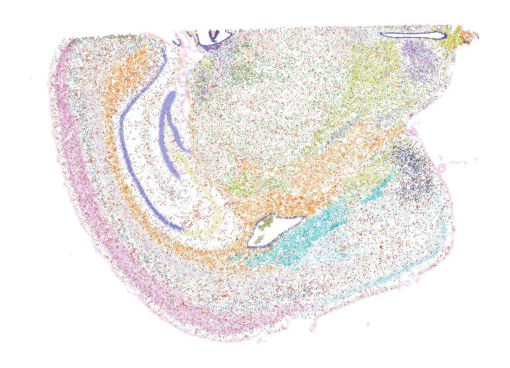
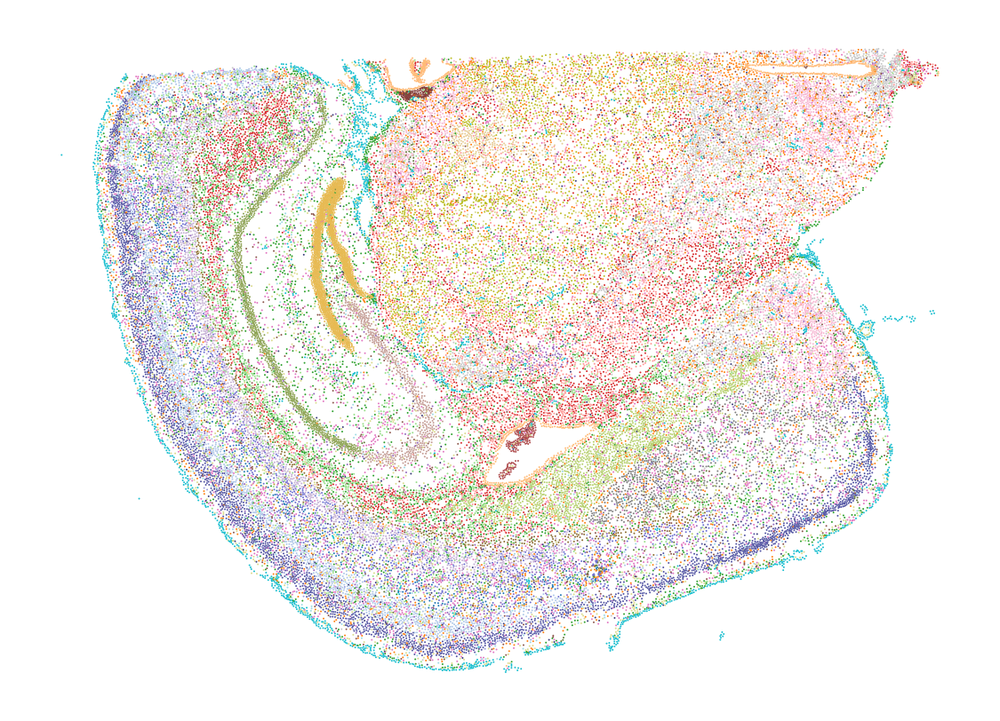

Normalization · does it matter?
Same cells, same clustering, three normalizations
Data
QC
Filter
Normalize
Cluster
Markers
Library size + log

23 clusters
Cell area + log

26 clusters
Pearson residuals

34 clusters
Agreement between clusterings (adjusted Rand index)
library size vs area
0.72
area vs Pearson
0.57
library size vs Pearson
0.53
ARI = 1: identical groups · 0: no better than chance
The big structures (cortex layers, hippocampus, white matter) appear in all three, but the number and borders of clusters change. Normalization is an analysis choice: report it, and check that your conclusion survives another choice. Colours are not matched between maps.